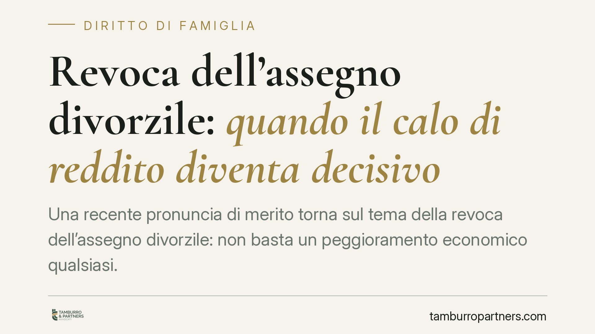

Revoca dell'assegno divorzile: quando il calo di reddito diventa decisivo
Una recente pronuncia di merito torna sul tema della revoca dell'assegno divorzile: non basta un peggioramento economico qualsiasi. Servono fatti nuovi, stabili e realmente incidenti rispetto alla situazione già valutata. Chi versa l'assegno e subisce un calo di reddito documentato può ottenerne la revisione, con effetti che retroagiscono alla data della domanda.

Il caso
Un ex coniuge obbligato al versamento dell'assegno divorzile chiede al Tribunale la revoca dell'obbligo, allegando un peggioramento significativo della propria condizione reddituale intervenuto dopo la sentenza che aveva fissato l'assegno.
Il Tribunale accoglie la domanda, ma solo dopo aver verificato che il calo di reddito fosse effettivo, documentato e stabile nel tempo. La decisione ribadisce un principio consolidato: i provvedimenti economici del divorzio non sono immutabili, ma la loro modifica presuppone una prova rigorosa dei presupposti.
Si tratta di una pronuncia di merito recente. In assenza di conferma definitiva degli estremi di pubblicazione, ne richiamiamo qui il contenuto giuridico, che si allinea a un orientamento ormai stabile della giurisprudenza.
Inquadramento normativo
L'assegno divorzile trova la sua base sostanziale nell'art. 5 della Legge n. 898/1970, che ne disciplina presupposti e funzione (assistenziale, compensativa e perequativa, secondo la lettura fornita dalle Sezioni Unite della Cassazione).
La revisione dell'assegno è invece regolata, sul piano sostanziale, dall'art. 9 della Legge n. 898/1970, che consente al giudice di modificare le condizioni economiche quando "sopravvengano giustificati motivi". Sul piano processuale, il procedimento segue oggi le forme introdotte dalla riforma Cartabia (D.Lgs. n. 149/2022), con il rito unificato in materia di persone, minorenni e famiglia.
È un punto tecnico da chiarire: i provvedimenti economici del divorzio operano rebus sic stantibus, cioè restano validi finché permane la situazione di fatto valutata dal giudice. Non costituiscono un giudicato in senso proprio. Per questo la sopravvenienza di circostanze nuove ne consente la revisione, senza che ciò significhi "riaprire" una decisione definitiva.
Cosa serve davvero per ottenere la revoca
La giurisprudenza richiede che i fatti sopravvenuti presentino tre caratteristiche cumulative. Devono cioè coesistere tutte e tre; l'assenza anche di una sola impedisce la revisione.
- Nuovi: verificatisi dopo la decisione che ha fissato l'assegno, e non già valutabili in quella sede.
- Stabili: non episodici o transitori. Una flessione temporanea di fatturato o una riduzione stagionale non bastano.
- Significativi: idonei a incidere in modo apprezzabile sull'equilibrio economico originariamente accertato.
Un calo di reddito che rispetti questi tre requisiti può giustificare la revoca. Un peggioramento marginale, o presumibilmente reversibile, di norma no.
Un punto di attenzione: la riduzione volontaria
I giudici non premiano la riduzione di reddito costruita ad arte. Chi lascia volontariamente un'attività, rifiuta occasioni di lavoro o organizza in modo pretestuoso il proprio patrimonio per apparire più povero difficilmente ottiene la revoca. Il calo deve essere reale e non ricercato.
Gli effetti: da quando decorre la revoca
La revoca, quando concessa, produce effetti dalla data della domanda giudiziale, non dalla sentenza. Le somme eventualmente versate dopo tale data risultano quindi, in linea di principio, ripetibili: l'ex coniuge obbligato può chiederne la restituzione, salve le valutazioni sul concreto utilizzo delle somme percepite dal beneficiario.
Questo profilo ha un impatto pratico rilevante, perché i tempi processuali possono essere lunghi e la decorrenza retroattiva incide sulle somme complessivamente dovute.
Cosa fare in concreto
- Documentare il calo di reddito con prova completa: dichiarazioni fiscali, buste paga, bilanci, estratti conto, eventuale cessazione di rapporti di lavoro o contratti.
- Dimostrare la stabilità del peggioramento, evitando di fondare la domanda su dati riferiti a un unico esercizio o a un periodo isolato.
- Depositare tempestivamente la domanda di revisione: la decorrenza degli effetti è ancorata alla data del deposito, non alla pronuncia.
- Evitare condotte equivoche: dimissioni volontarie, cessioni patrimoniali o operazioni sospette possono essere lette come tentativi di ridurre artificiosamente il reddito.
- Ricostruire il quadro completo delle rispettive condizioni economiche, poiché il giudice valuta la situazione di entrambi gli ex coniugi.
È opportuna una valutazione preventiva della solidità probatoria prima di avviare il procedimento: presentare una domanda fondata su elementi fragili espone al rigetto e ai costi conseguenti.
In sintesi
La revoca dell'assegno divorzile è possibile, ma non automatica. Richiede fatti nuovi, stabili e significativi, provati con rigore, e non tollera riduzioni di reddito volontarie o strumentali. Quando i presupposti sussistono, gli effetti decorrono dalla domanda, con possibile restituzione delle somme versate nel frattempo.
Contributo informativo a cura di Tamburro & Partners Avvocati. Non costituisce parere legale.
Ogni famiglia ha il suo equilibrio.
Separazione, divorzio, affidamento, assegno: se vuoi un confronto riservato su una specifica situazione, scrivi allo studio. Ti rispondiamo entro un giorno lavorativo.